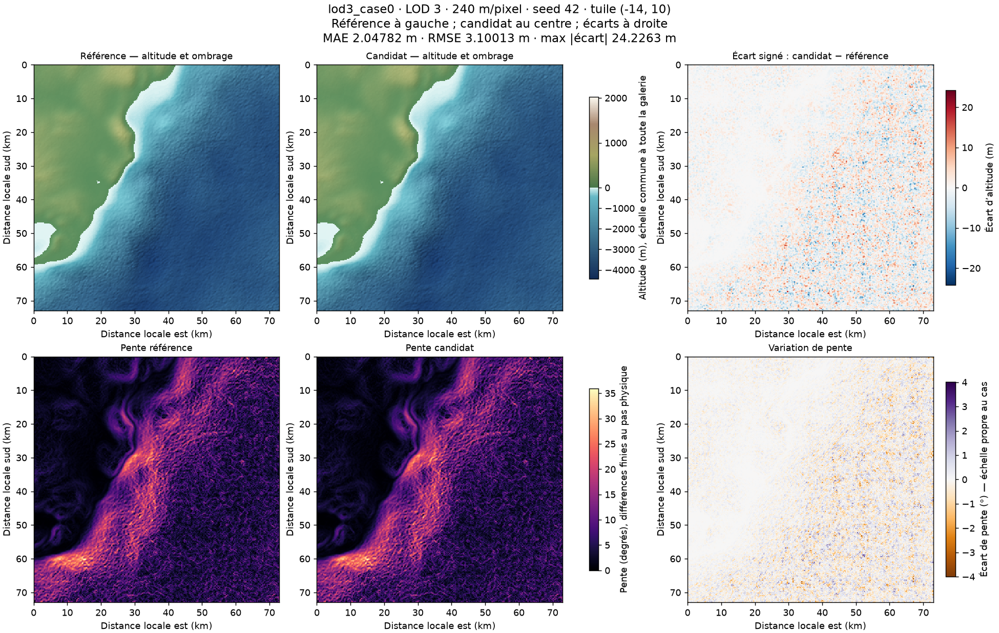
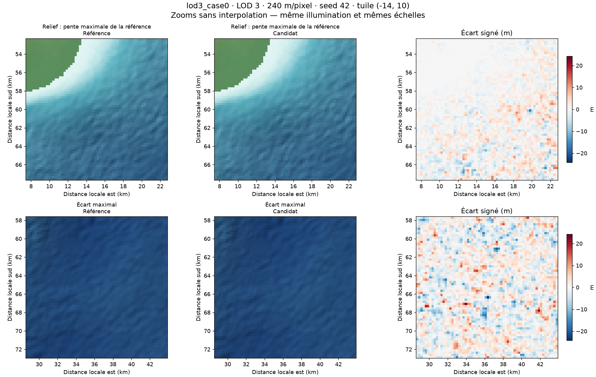
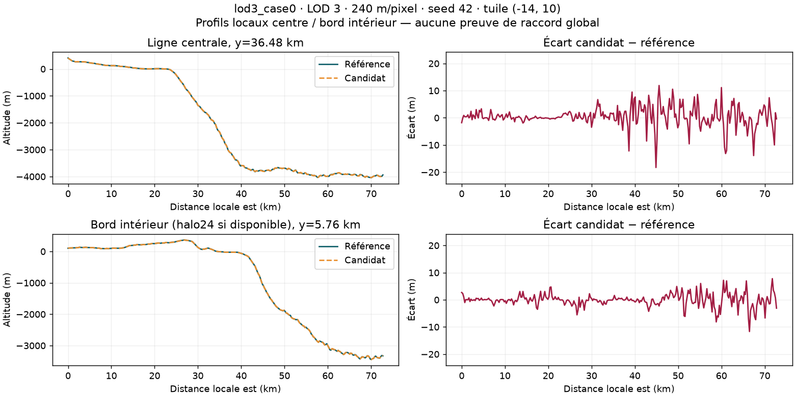

Images calculées directement depuis les altitudes du benchmark. Référence et candidat partagent l’échelle hypsométrique et l’éclairage (azimut315°, hauteur45°, sans exagération verticale). LOD3 : 240m/pixel ; LOD2 : 120m/pixel. Cliquer une image pour l’ouvrir à sa taille complète.
Écarts signés en mètres : rouge = candidat plus haut, bleu = plus bas. L’échelle d’écart est commune aux cas d’un candidat, avec minimum±1m même si tous les écarts sont nuls. Les gradients suivent le pas physique. Les tracés au bord d’un crop ne certifient pas les raccords entre tuiles : ce corpus ne contient pas nécessairement les voisins.
Un aperçu latent n’est pas le DEM final. Ces vues ne constituent ni un rendu WebGPU, ni une validation géographique, ni une mesure de performance. La légende d’altitude est fixée par la référence ; les valeurs candidates hors plage prennent les couleurs extrêmes.
REJETÉ PAR LE SEUIL PHYSIQUE DE 1 MÈTRE. Cette variante est présentée uniquement pour examiner ses artefacts ; elle ne doit pas être activée.
Un reçu « failed » est une expérience rejetée, affichée pour diagnostic. Les mesures ci-dessous portent uniquement sur les arrays disponibles.
Corpus incomplet : lod2_case0_elev, lod2_case1_elev, lod2_case2_elev, lod2_case3_elev, lod3_case1_elev, lod3_case2_elev, lod3_case3_elev
MAE 2.04782 m · RMSE 3.10013 m · max |écart| 24.2263 m · biais 0.00257766 m · pixels non finis 0


